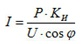
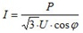

Калькулятор кабеля
|
|
||||||||||||||||||||||||||||||||||||||||||||||||||||||||||||||||||||||||||||||||||||||||||||
|
||||||||||||||||||||||||||||||||||||||||||||||||||||||||||||||||||||||||||||||||||||||||||||
Кабельный калькулятор. Как произвести расчет сечения кабеля или провода?
Электрический калькулятор, введение.
Электрический кабель – это основа электросетей, без него невозможно устройство энергопитающей структуры. Если вам необходимо провести новую проводку, или пришло время заменить старую, необходимо знать основы расчета мощности кабеля по сечению. Для чего?
Правильный расчет кабеля питания – основа безопасности. Если диаметр проводника недостаточен, а нагрузка на кабель высока, последствия могут быть весьма плачевные. Под её воздействием металлическая часть нагревается, что ведёт к оплавлению изоляции и короткому замыканию. В такой ситуации может возникнуть пожар. Чтобы избежать подобных последствий, подойдём к выбору электропроводки профессионально.
В конце статьи вы сможете произвести самостоятельно расчёт кабеля в программе калькуляторе.
Формула расчета сечения кабеля, как рассчитать нагрузку?
Для каждого сечения существует допустимая токовая нагрузка. Например: если нам нужен кабель для того, чтобы подключить одну лампочку, нагрузка на провод, или сила тока, проходящего по проводнику, будет равняться мощности потребления данной лампочки. Это может быть 100 Вт, или (если вы используете новейшие светодиодные осветительные приборы) всего 6 Вт. Таким образом, даже на примере освещения, мы видим, что разница в нагрузке может быть ощутимой. Однако от домашней электросети питается не одна лампочка. Как правило, это целый список бытовых приборов. Чтобы рассчитать нагрузку на провод и выяснить необходимое сечение, нужно знать, сколько электроэнергии может потребляться в том случае, когда все они подключены. Итак, чтобы расчитать сечение провода, нам понадобится таблица.
Расчет потребляемой мощности электроприборов.
|
Электроприбор |
Потребляемая мощность в Вт |
|
Холодильник |
50 |
|
Электроплита |
1000 |
|
Микроволновка |
1000 |
|
Электрический чайник |
1200 |
|
Посудомоечная машина |
600 |
|
Мультиварка |
1400 |
|
Стиральная машина |
300 |
|
Бойлер |
2500 |
|
Утюг |
1500 |
|
Компьютер |
400 |
|
Телевизор |
150 |
|
LED телевизор |
75 |
|
Освещение |
400 |
|
LED освещение |
30 |
|
Пылесос |
850 |
Кабельный калькулятор. Расчёт кабеля по мощности.
В ней дана приблизительная мощность каждого бытового прибора. Следует помнить, что это средние цифры, точные можно узнать из спецификации каждой конкретной модели. Таблица, тем не менее, даёт нам некоторое представление о нагрузке, которую испытывает электрокабель, если все приборы включены в сеть. Разумеется, такое в быту, скорее всего, не случится, но мы говорим о расчёте оптимального сечения, поэтому учитываются даже исключительные варианты. Итак, приблизительный расход электроэнергии в час составляет 10900 – 11350 Вт. Принято брать большее значение и дополнительно добавлять некий запас мощности, например на случай непредвиденного подключения электрообогревателя зимой (+2000 Вт). Мы примем за базовую цифру 14 000 Вт.
Чтобы рассчитать силу тока для однофазной сети (220) пользуемся формулой: 
Для трёхфазной (380): 
Где: Р - общая мощность электрических приборов (мы взяли 14000 Вт)
U - напряжение сети (220 V);
Ки= 0.75;
cosφ – коэффициент, который для бытовых электрических приборов равен 1.
Кабельный калькулятор. Расчёт кабеля по мощности. Как это делалось раньше?
Зная максимальную нагрузку и силу тока, инженер рассчитывал сечение проводки с помощью таблиц, которые остаются актуальными и на сегодняшний день: они являются точными и основаны на действующих ГОСТах.
ПУЭ, Таблица 1.3.4. Допустимый длительный ток для проводов и шнуров с резиновой и поливинилхлоридной изоляцией с медными жилами.
ПУЭ, Таблица 1.3.6. Допустимый длительный ток для проводов с медными жилами с резиновой изоляцией в металлических защитных оболочках и кабелей с медными жилами с резиновой изоляцией в свинцовой, поливинилхлоридной, найритовой или резиновой оболочке, бронированных и небронированных.
ПУЭ, Таблица 1.3.8. Допустимый длительный ток для переносных шланговых легких и средних шнуров, переносных шланговых тяжелых кабелей, шахтных гибких шланговых, прожекторных кабелей и переносных проводов с медными жилами.
ГОСТ 16442-80, Таблица 23. Допустимые токовые нагрузки кабелей до 3КВ включ. с медными жилами с изоляцией из полиэтилена и поливинилхлоридного пластиката, А.
Расчет провода по мощности. Современные программы расчёта разработаны для того, чтобы максимально упростить задачу. Имея вводные данные, такие как желаемый материал проводника (медь или алюминий) и максимальное потребление электроэнергии (а, следовательно, силу тока), можно узнать требуемое сечение кабеля для сети 220V или 380V.
Программа расчёта кабеля использует формулы, алгоритмы и математические значения, выдавая в окошечке готовый результат, понятный простому обывателю. Учитываются все параметры электросети, такие как:
- постоянный или переменный ток;
- материал проводника;
- максимальная суммарная мощность;
- напряжение;
- коэффициент мощности;
- способ прокладки: воздушная или подземная;
- длина кабеля.
Вкратце пройдёмся по приведённым терминам
Ток: бывает постоянный и переменный. Постоянный получается в результате химической реакции (батареи, аккумуляторы). В быту и на производстве чаще используется переменный. Он годится для передачи электроэнергии на большие расстояния, дешевле в использовании и практически все электроприборы адаптированы для использования переменного тока.
Напряжение: это величина, характеризующая величину работы тока за отрезок времени (1 сек) на ограниченном участке.
Мощность: величина производимой работы, сопровождается выделением тепловой энергии.
КПД*cos(φ): коэффициент, применяемый в расчётах сечения кабеля и др.
Сечение: площадь проводящей части кабеля на поперечном срезе.
Диаметр: поперечный размер кабеля с учётом изоляции.
Допустимые потери: при передаче тока по кабелю часть его теряется благодаря такому параметру, как сопротивление. Существуют стандарты, характеризующие допустимую величину потерь, превышение которых служит поводом для проверки состояния электросети. Каждому металлу свойственно собственное сопротивление, соответственно допустимые потери, скажем, для медного проводника и алюминиевого, будут разными.
ОНП: одновременно нагруженные проводники.
Материал: металл, из которого выполнены жилы провода.
Далее рассмотрим проводимость
Проводимость представляет собой способность какого-либо объекта проводить электрический ток. Кроме того, проводимостью называют и физическую величину, которая характеризует упомянутую способность. Данная величина также является обратной удельному сопротивлению. Рассчитывается она, как правило, при помощи специальных электроприборов.
Поскольку основной единицей сопротивления является Ом, а рассматривая нами величина обратна ей, то она будет равняться 1 См = 1 Ом -1, где См – Сименс или S (в международной системе).
Проводимость различных объектов неодинакова. Например, среди металлов, пожалуй, лучшей проводимостью обладают серебро, а также медь. Это связано с особенностью структуры их атомов, которые позволяют электронам свободнее перемещаться.